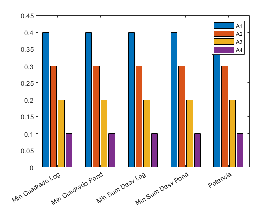
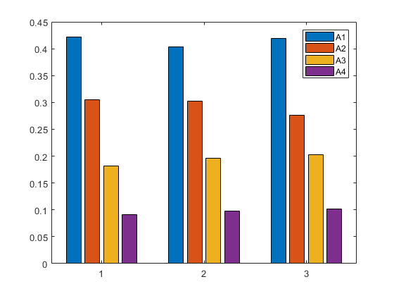

clc;
clear;
fprintf("-------------Consistente-------------\n");
w = [0.4 0.3 0.2 0.1]
M= zeros(4);
for i = 1:4
for j = 1:4
M(i,j) = w(i)/w(j);
end
end
M
fprintf("-------------Metodo de la potencia-------------\n");
w0 = funciones(M, 0)
[errorInf, IndexMaxErr, errorFro, errorUno, errorErrRel] = errores(M,w0)
fprintf("-------------Metodo de Minimos Cuadrados [Log]-------------\n");
w1 = funciones(M, 1)
[errorInf, IndexMaxErr, errorFro, errorUno, errorErrRel] = errores(M,w1)
fprintf("-------------Metodo de Minimos Cuadrados [Ponderado]-------------\n");
w2 = funciones(M, 2)
[errorInf, IndexMaxErr, errorFro, errorUno, errorErrRel] = errores(M,w2)
figure();
bar([w0';w1';w2']);
l=compose("A%d",(1:length(M)));
legend(l);
clear;
fprintf("-------------NO Consistente-------------\n");
M=[1 2,2,4;1,1,1.5,3;0.5,0.6,1,2;0.25,0.3,0.5,1]
fprintf("-------------Metodo de la potencia-------------\n");
w0 = funciones(M, 0)
[errorInf, IndexMaxErr, errorFro, errorUno, errorErrRel] = errores(M,w0)
fprintf("-------------Metodo de Minimos Cuadrados [Log]-------------\n");
w1 = funciones(M, 1)
[errorInf, IndexMaxErr, errorFro, errorUno, errorErrRel] = errores(M,w1)
fprintf("-------------Metodo de Minimos Cuadrados [Ponderado]-------------\n");
w2 = funciones(M, 2)
[errorInf, IndexMaxErr, errorFro, errorUno, errorErrRel] = errores(M,w2)
figure();
bar([w0';w1';w2']);
l=compose("A%d",(1:length(M)));
legend(l);
-------------Consistente-------------
w =
0.4000 0.3000 0.2000 0.1000
M =
1.0000 1.3333 2.0000 4.0000
0.7500 1.0000 1.5000 3.0000
0.5000 0.6667 1.0000 2.0000
0.2500 0.3333 0.5000 1.0000
-------------Metodo de la potencia-------------
w0 =
0.4000
0.3000
0.2000
0.1000
errorInf =
8.8818e-16
IndexMaxErr =
2 4
errorFro =
1.0489e-15
errorUno =
8.8818e-16
errorErrRel =
5.8835e-16
-------------Metodo de Minimos Cuadrados [Log]-------------
Warning: Rank deficient, rank = 3, tol = 6.526752e-15.
w1 =
0.4000
0.3000
0.2000
0.1000
errorInf =
8.8818e-16
IndexMaxErr =
1 4
errorFro =
1.0551e-15
errorUno =
1.3323e-15
errorErrRel =
4.7175e-16
-------------Metodo de Minimos Cuadrados [Ponderado]-------------
w2 =
0.4000
0.3000
0.2000
0.1000
errorInf =
1.3323e-15
IndexMaxErr =
1 3
errorFro =
2.6210e-15
errorUno =
3.3307e-15
errorErrRel =
1.7297e-15
-------------NO Consistente-------------
M =
1.0000 2.0000 2.0000 4.0000
1.0000 1.0000 1.5000 3.0000
0.5000 0.6000 1.0000 2.0000
0.2500 0.3000 0.5000 1.0000
-------------Metodo de la potencia-------------
w0 =
0.4221
0.3053
0.1818
0.0909
errorInf =
0.6446
IndexMaxErr =
1 4
errorFro =
1.0697
errorUno =
1.0037
errorErrRel =
0.5395
-------------Metodo de Minimos Cuadrados [Log]-------------
Warning: Rank deficient, rank = 3, tol = 6.526752e-15.
w1 =
0.4037
0.3018
0.1963
0.0982
errorInf =
0.6625
IndexMaxErr =
1 2
errorFro =
0.7274
errorUno =
0.7380
errorErrRel =
0.4380
-------------Metodo de Minimos Cuadrados [Ponderado]-------------
w2 =
0.4195
0.2766
0.2026
0.1014
errorInf =
0.4832
IndexMaxErr =
1 2
errorFro =
0.6986
errorUno =
0.6824
errorErrRel =
0.5418
 